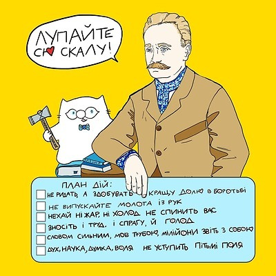
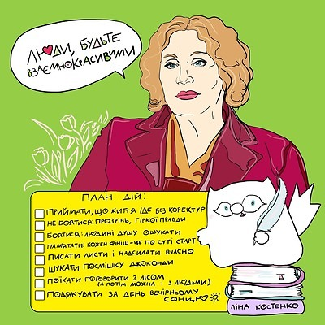
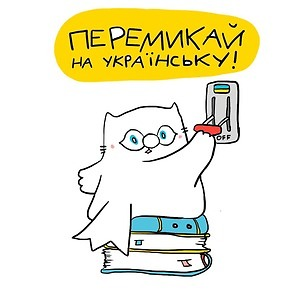
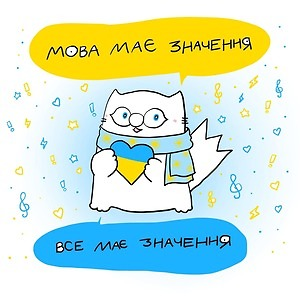
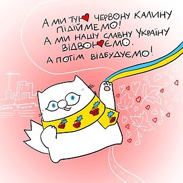
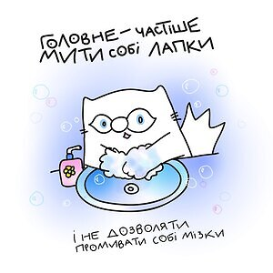

НОВИЙ УКРАЇНСЬКІЙ ПРАВОПИС: ІСТОРІЯ, ЗМІНИ, НОВОВВЕДЕННЯ
Новий український правопис ухвалили – у травні 2019-го. Цьому передувала довга дискусія та обговорення змін, які збиралися запровадити (ця робота велася із червня 2015 року, громадське обговорення почалося 2018-го). Часто лунали закиди «навіщо це взагалі треба» і «хіба не достатньо чинного правопису». Комусь не подобалося, що доведеться вчити нові правила, а хтось, навпаки, заявляв, що мова стане сучаснішою. Утім, так, передумови для нових правил були; і ні – їх не треба буде вчити дуже багато.
Також одразу зазначимо, що на перехідний етап виділили п’ять років: тобто аж до 2024-го діятимуть і старі правила, і нові, аби до них можна було звикнути.
 Новий правопис: навіщо?
Досі в Україні користувалися правописом, ухваленим ще 1989 року. Багатьох слів, якими ми активно послуговуємося сьогодні – особливо термінів на означення технічних новинок, неологізмів тощо – він ще не міг взяти до уваги, бо їх тоді не існувало. Оновлення мови – це живий і невпинний процес, а також ознака того, що вона розвивається.
Також у тепер вже передостанній редакції правопису не було кількох правил, якими українці користувалися до 1933 року. До того часу в Україні функціонував так званий скрипниківський, або ж харківський правопис (затверджений радянською владою у 1926 році), що був достатньо зручним, якісним та передавав на письмі фонетичні особливості української мови. Однак менш ніж за 10 років українізацію в СРСР згорнули, і правопис замінили на більш наближений до російської мови (скрипниківський правопис затаврували «націоналістичним», як це було прийнято у радянської влади; багато мовознавців, що над ним працювали, у сталінську епоху зазнали репресій). Так, у правописі від 1933 року з української прибрали літеру «ґ», кличний відмінок також внесли 126!!! змін в український правопис (для порівняння зауважу, що в нинішній правопис внесені 19 змін).
Не складно збагнути, що ті кардинальні «нововведення», більшовицької влади, фактично зрусифікували наш правопис, максимально наблизивши до російського. Радянська влада не заборонила українську мову, а залізла в її душу. З української мови зробили інтернаціоналізований російський суржик, яким ми користувалися впродовж багатьох десятиліть. У 1933 році нашу націю не лише знищували фізично, штучно організованим голодомором, але й духовно, переписавши наш правопис.
   У чому полягають зміни?
У Національній академії наук України пояснюють: правила загалом можна поділити на дві великі групи. Ті, що допускають лише один варіант написання (обов’язкові), і ті, що передбачають кілька таких опцій (варіативні).
До першої групи обов’язкових норм написання належать такі:
- проєкт, проєкція (за аналогією до інших слів, що творяться так само – ін’єкція, траєкторія, об’єкт тощо – з латинським коренем -ject-);
- Дікенс, Текерей, Бекі (без подвоєння приголосних -кк);
- іншомовний компонент ( рхі-, архи-, бліц-, гіпер-, екстра-, макро-, максі-, міді-, мікро-, міні-, мульти-, нано-, полі-, преміум-, супер-, топ-, ультра-, флеш-, анти-, віце-, екс-, контр-, лейб-, обер-, штабс-, унтер-) на початку слова писатиметься разом: мінісукня, віцепрезидент, ексміністр, вебсайт;
- числівник «пів» у значенні «половина» писатиметься окремо (що простіше, ніж у старому правописі, за яким було, приміром, пів’яблука, але пів-Києва): пів хвилини, пів яблука, пів Києва, пів аркуша, пів години, пів відра, пів міста, пів огірка, пів острова, пів яблука, пів Європи;
- якщо ж «пів» з іменником є єдиним поняттям та не означає «половину», слово завжди писатиметься разом: піваркуш, південь, півзахист, півколо, півкуля, півмісяць, півоберт, півовал, півострів;
- священник (написання з двома «нн», так само, як «священний» та інші спільнокореневі слова);
- також разом писатимуться складноскорочені слова й похідні від них: адмінресурс, Міносвіти, профспілка, Святвечір;
- aктивно впроваджуються у вжиток фемінітиви — слова жіночого роду, аналогічним поняттям чоловічого роду: льотчик – льотчиця, письменник – письменниця, професор – професорка. Фемінітиви утворюють найчастіше за допомогою суфіксів –к– (викладачка, депутатка, композиторка), –иц– (письменниця, речниця, співзасновниця), –ин– (мисткиня, членкиня, продавчиня) та –ес– (критикеса, фотографеса, баронеса) тощо.
А це – варіативні норми, тобто такі, що допускають кілька опцій написання.
- Aудієнція і авдієнція, лауреат і лавреат, аудиторія і авдиторія;
- Кафедра і катедра, ефір і етер, міф і міт, Борисфен і Бористен;
- Ірій і ирій, ірод і ирод;
- Закінчення -и/-і у родовому відмінку іменників: радості й радости, любові й любови тощо.
Ілюстрації "Кіт Інжир" авторки Олени Павлової